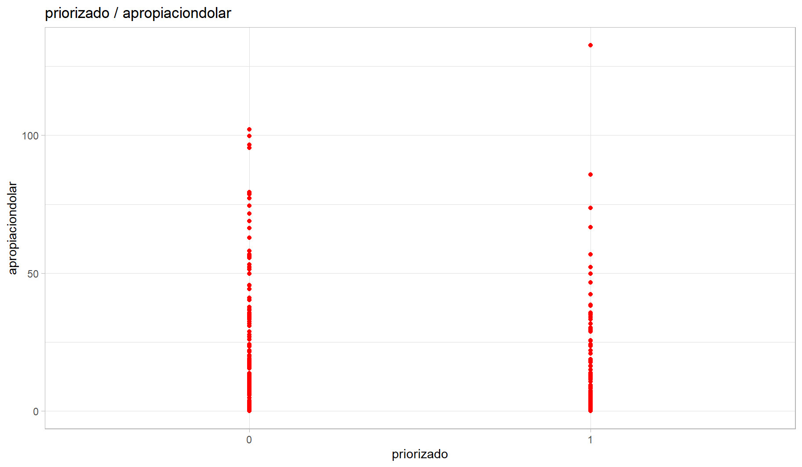
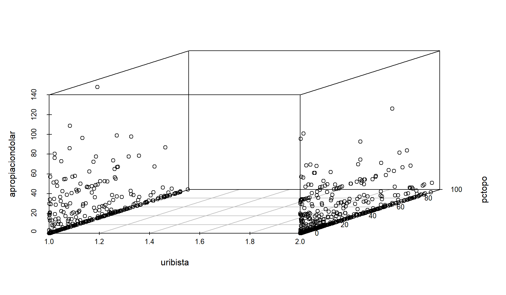
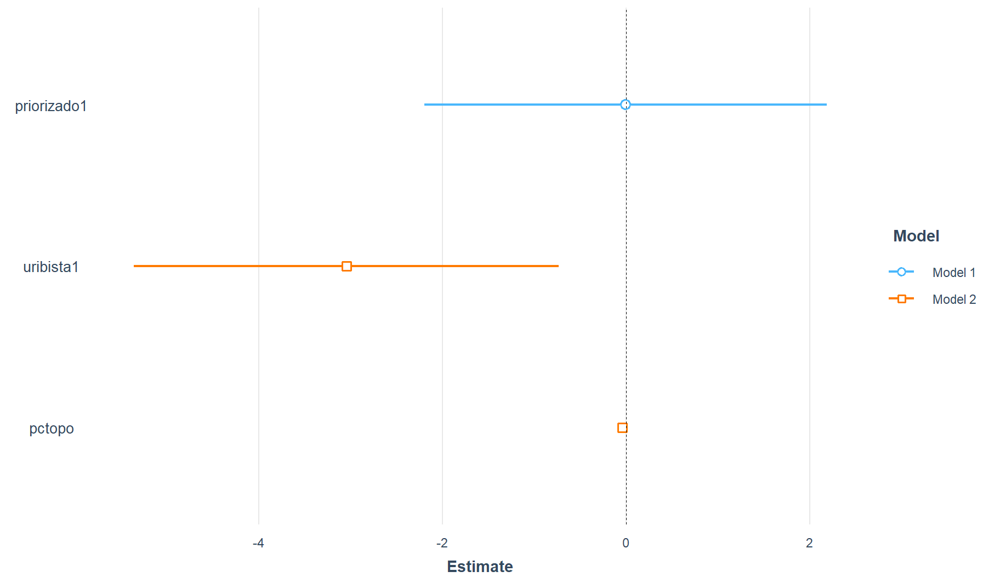
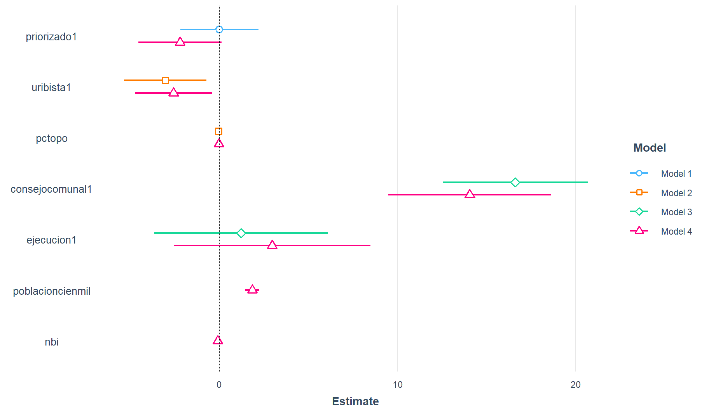
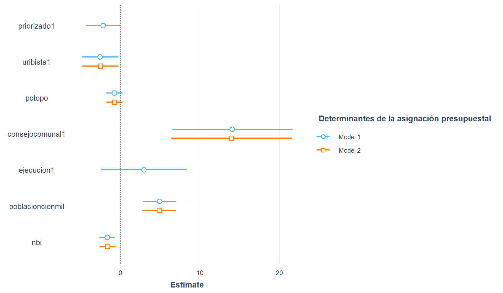

#getwd()
#setwd("")
library(rio)
dataPAVI = import("./data/s12/b-pavimentando con votos.sav")13 Regresión lineal Múltiple
El objetivo de esta sesión es conocer los comandos básicos de para la regresión lineal Múltiple Para este ejercicio utilizaremos para reaplicar la base de datos.
#names(dataPAVI)
#str(dataPAVI)13.1 Formateo: DISTINGAMOS LAS VARIABLES NUMERICAS Y (NOMINALES) DICOTOMICAS
# forma corta
dataPAVI[,c(1:2, 5, 7:8)] = lapply(dataPAVI[,c(1:2, 5, 7:8)],as.numeric)
dataPAVI[,c(3:4, 6)] = lapply(dataPAVI[,c(3:4, 6)],as.factor)# forma larga
#dataPAVI$poblacioncienmil = as.numeric(dataPAVI$poblacioncienmil)
#dataPAVI$nbi = as.numeric(dataPAVI$nbi)
#dataPAVI$consejocomunal = as.factor(dataPAVI$consejocomunal)
#dataPAVI$priorizado = as.factor(dataPAVI$priorizado)
#dataPAVI$uribista = as.numeric(dataPAVI$uribista)
#dataPAVI$ejecucion = as.factor(dataPAVI$ejecucion)
#dataPAVI$apropiaciondolar = as.numeric(dataPAVI$apropiaciondolar)
#dataPAVI$pctopo = as.numeric(dataPAVI$pctopo)14 HIPOTESIS 1:
- Refiere a la asignación presupuestal en relación a los criterios TÉCNICOs determinados por documentos elaborados por el gobierno / La asignación presupuestal se debe a criterios técnicos
apropiaciondolar -> Variable dependiente Priorizado -> variable independiente - categorica dummy -> sí y no.
modelo1 = lm(apropiaciondolar ~ priorizado, data = dataPAVI) #(Y~X)
summary(modelo1) #modelo1 -> este es incompleto, mejor usar summary
Call:
lm(formula = apropiaciondolar ~ priorizado, data = dataPAVI)
Residuals:
Min 1Q Median 3Q Max
-8.277 -8.277 -8.272 1.108 124.371
Coefficients:
Estimate Std. Error t value Pr(>|t|)
(Intercept) 8.277427 0.560554 14.766 <2e-16 ***
priorizado1 -0.005434 1.117040 -0.005 0.996
---
Signif. codes: 0 '***' 0.001 '**' 0.01 '*' 0.05 '.' 0.1 ' ' 1
Residual standard error: 16.05 on 1094 degrees of freedom
Multiple R-squared: 2.163e-08, Adjusted R-squared: -0.0009141
F-statistic: 2.367e-05 on 1 and 1094 DF, p-value: 0.9961- Gráfico: SOLO LINEAL
library(ggplot2) # para hacer gráficos facheros
ggplot(dataPAVI, aes(x = priorizado, y = apropiaciondolar)) +
geom_point(colour="red") +
xlab("priorizado") + ylab("apropiaciondolar") +
ggtitle("priorizado / apropiaciondolar") +
theme_light() + geom_smooth(method="lm", se = F)
#No es regresión lineal múltiple, pues Solo tenemos una variable independiente -> priorizado
#INTERPRETACIÓN: + Al revisar el p-value (0.9961), el cual es mayor a 0.05, se determina que el modelo1 no es válido para predecir la variable dependiente (apropiaciondolar) a partir de la variable (priorizado). Parece que la H1 no funciona, es decir, no aporta ninguna explicación.
15 HIPOTESIS 2:
- La asignación presupuestal en infraestructura vial en Colombia r esponde a negociaciones bilaterales entre el ejecutivo y el legislativo basadas en necesidades políticas y electorales de corto plazo // Refiere a la asignación presupuestal en relación a negociaciones basadas en necesidades políticas y electorales (mecanismo clientelista)
variables: alcalde uribista o no uribista-categorica dicotomica porcentaje de oposicion -numérica-,
#str(dataPAVI$uribista)
# Uribista tiene que estar como factor:
dataPAVI$uribista <- as.factor(dataPAVI$uribista)
table(dataPAVI$uribista)
0 1
332 560 15.1 Modelo 2
# aca se le añade otra variable con el signo: +
modelo2 = lm(apropiaciondolar ~ uribista + pctopo, data = dataPAVI)
summary(modelo2)
Call:
lm(formula = apropiaciondolar ~ uribista + pctopo, data = dataPAVI)
Residuals:
Min 1Q Median 3Q Max
-11.939 -8.803 -7.585 2.127 122.158
Coefficients:
Estimate Std. Error t value Pr(>|t|)
(Intercept) 11.93907 1.18455 10.079 < 2e-16 ***
uribista1 -3.04661 1.17808 -2.586 0.00987 **
pctopo -0.04209 0.02282 -1.845 0.06539 .
---
Signif. codes: 0 '***' 0.001 '**' 0.01 '*' 0.05 '.' 0.1 ' ' 1
Residual standard error: 16.74 on 885 degrees of freedom
(208 observations deleted due to missingness)
Multiple R-squared: 0.009834, Adjusted R-squared: 0.007596
F-statistic: 4.395 on 2 and 885 DF, p-value: 0.01261Si una municipalidad tiene alcalde uribista, el presupuesto de infraestructura vial disminuye en 3.04661.
Si una municipalidad incrementa su porcentaje oposición al uribismo en una unidad, el presupuesto de infraestructura vial disminuye en 0.04209.
library(scatterplot3d)
(a=scatterplot3d(dataPAVI[,c('uribista', 'pctopo', 'apropiaciondolar')]))
H0: las variables independientes no influyen en la variable dependiente / (Los coeficientes de las variables independientes son iguales a cero)
H1: las variables independientes sí influyen en la variable dependienteAl revisar el p-value (0.01261), el cual es menor a 0.05, se determina que el modelo2 es válido para predecir la variable dependiente (apropiaciondolar) a partir de las variables (uribista + pctopo). Por lo que podemos rechazar la hipotesos nula.
Al revisar el p-value (2.2e-16), el cual es menor a 0.05, rechazamos la H0. Por lo que a un 95% de confianza las variables independientes (educ) y (experiencia) tienen impacto significativo en la variable dependiente (salario_actual).
Pero al revisar el p-value (0.1330) de la otra variable independiente (antiguedad), advertimos que es mayor a 0.05, a saber, no aporta significativamente al modelo5. Por tanto, se recomienda construir un modelo de regresión sin la variable (antiguedad). Pese a ello, para la interpretacón lo tomaremos en cuenta. Así se determina que el modelo5 solo es válido para predecir el salario actual de un trabjador a partir de su educación y experiencia.
15.2 Frente a uribista
H0: Si un municipio tenga o no tenga un alcalde uribista no influye en la variable independiente (la asignación presupuestal)
H1: Si un municipio tenga o no tenga un alcalde uribista sí influye en la variable independiente (la asignación presupuestal)El p-value específico de esta variable es 0.00987, menor a 0.05, por lo que la variable uribista sí impacta en la asignacion presupuestal. Rechazamos la H0.
#INTERPRETACIÓN: - sentido: inverso -3.04661 - variable uribista: - 0: no fue uribista el alcalde - 1: sí fue uribista el alcalde
- CUANDO UN MUNICIPIO tiene un alcalde uribista, manteniendo consante el porcentaje de oposición, la asignación presupuestal vial disminuye en 3.04661 millones de dólares
15.3 Frente a pctopo (No es signifcativa)
El p-value especifico para la variable pctopo es 0.06539, mayor a 0.05,por lo que fracasamos al rechazar la H0.La variable no impacta significativamente en la (variable dependiente) asignacion presupuestal.
Explicando su sentido: Inverso -0.04209
Cuando un porcentaje de oposición incrementa en una unidad (1%) (o punto procentual mayor), mateniendo constante el ser una alcalde uribista, la asignación presupuestal vial disminuye en 0.04209 millones de dólares.
Coeficientes:
asignaciónvial = 11.93907 + (-3.04661uribista1) + (-0.04209pctopo)
EJEMPLOS: #PERO ANTES: ¿CÓMO SABER EL PORCENTAJE DE OPOSICIÓN DE UNA MUNICIPALIDAD QUE ES URIBISTA? #EN este caso usaremos summary para conocer el min y el max
summary(dataPAVI$pctopo) Min. 1st Qu. Median Mean 3rd Qu. Max. NA's
0.000 5.922 20.308 27.874 45.711 99.419 7 Entonces, ¿qué sucede con un municipio que tiene un alcalde uribista y que tiene 27.874 de porcentaje de oposición?
Y1 <- 11.93907+(-3.04661*1)+(-0.04209*27.874)
Y1[1] 7.719243Un municipio con esas características va a tener un presupuesto de 7.719243 millones
Ahora: ¿qué sucede con un municipio que no tiene un alcalde uribista y que tiene 27.874 de porcentaje de oposición?
Y2 <- 11.93907+(-3.04661*0)+(-0.04209*27.874)
Y2[1] 10.76585Un municipio con esas características va a tener un presupuesto de 10.76585 millones
- CONCLUSIÓN:
- El gobierno prefirió a los alcaldes no uribistas y también donde no tenían tanto porcentaje de oposición.
- El modelo ayuda a predecir el 0.7% de la variabilidad de la variable dependiente asignación presupuestal vial (apropiaciondolar).
de la variabilidad de la variable dependiente = del cambio sistemático de nuestra variable dependiente
Entonces, la variable que más impacta es “Uribista” –> PARA ESTAR MÁS SEGUROS, GUIARNOS POR LO COEFICIENTES ESTANDARIZADOS:
#install.packages("lm.beta")
library(lm.beta)
lm.beta(modelo2) #Nos otorga los coeficientes estandarizados para ver los efectos de las variables
Call:
lm(formula = apropiaciondolar ~ uribista + pctopo, data = dataPAVI)
Standardized Coefficients::
(Intercept) uribista1 pctopo
NA -0.08763178 -0.06251466 NOTA: FIJARNOS EN EL VALOR ABSOLUTO, ES DECIR, SIN EL SIGNO
La variable uribista1 (-0.08763178) impacta más en el modelo. o sea, tener o no alcalde Uribista impacta más en el modelo.
###PARA VISUALIZAR LOS DATOS #Pequeña tabla
#install.packages("jtools")
library(jtools)
summ(modelo2)MODEL INFO:
Observations: 888 (208 missing obs. deleted)
Dependent Variable: apropiaciondolar
Type: OLS linear regression
MODEL FIT:
F(2,885) = 4.39, p = 0.01
R² = 0.01
Adj. R² = 0.01
Standard errors: OLS
------------------------------------------------
Est. S.E. t val. p
----------------- ------- ------ -------- ------
(Intercept) 11.94 1.18 10.08 0.00
uribista1 -3.05 1.18 -2.59 0.01
pctopo -0.04 0.02 -1.84 0.07
------------------------------------------------NOTA: Est. -> Estimate P. -> P-value S.E. -> ERROR ESTANDAR t val. -> LOS VALORES T -> t value (en summary)
###Grafico de los coeficientes
#plot_coefs(modelo2)
plot_coefs(modelo1, modelo2)
INTERPRETACIÓN:
Ser uribista1 tiene un efecto más lejano de cero y el porcentaje de oposicion sale muy cercano a cero.
la linea es el intervalo de confianza del coeficiente, es decir, dicho coeficiente puede variar de acuerdo a la muestra que tengamos
El cuadradito es el promedio del coeficiente y la linea que le cruza es el intervalo de confianza.
#ahora con más variables… tabla resumen
library(huxtable) #install.packages("huxtable")
library(officer) #install.packages("officer")
export_summs(modelo1, modelo2, scale = TRUE,
error_format = "[{conf.low}, {conf.high}]")| Model 1 | Model 2 | |
|---|---|---|
| (Intercept) | 8.28 *** | 10.79 *** |
| [7.18, 9.38] | [8.96, 12.61] | |
| priorizado1 | -0.01 | |
| [-2.20, 2.19] | ||
| uribista1 | -3.05 ** | |
| [-5.36, -0.73] | ||
| pctopo | -1.05 | |
| [-2.17, 0.07] | ||
| N | 1096 | 888 |
| R2 | 0.00 | 0.01 |
| All continuous predictors are mean-centered and scaled by 1 standard deviation. The outcome variable is in its original units. *** p < 0.001; ** p < 0.01; * p < 0.05. | ||
INTERPRETACIÓN:
HIPOTESIS 3 :la asignación presupuestal en infraestructura vial en Colombia responde al esfuerzo del gobierno por fortalecer su base social de apoyo local a través de los Consejos Comunales de Gobierno.
16 AHORA CON LAS VARIABLES INDEPENDIENTES: consejocomunal + ejecucion
modelo3 = lm(apropiaciondolar ~ consejocomunal + ejecucion, data = dataPAVI)
summary(modelo3)
Call:
lm(formula = apropiaciondolar ~ consejocomunal + ejecucion, data = dataPAVI)
Residuals:
Min 1Q Median 3Q Max
-23.924 -7.321 -7.321 0.773 125.321
Coefficients:
Estimate Std. Error t value Pr(>|t|)
(Intercept) 7.3214 0.4928 14.855 < 2e-16 ***
consejocomunal1 16.6023 2.0734 8.007 2.98e-15 ***
ejecucion1 1.2232 2.4855 0.492 0.623
---
Signif. codes: 0 '***' 0.001 '**' 0.01 '*' 0.05 '.' 0.1 ' ' 1
Residual standard error: 15.6 on 1093 degrees of freedom
Multiple R-squared: 0.05592, Adjusted R-squared: 0.05419
F-statistic: 32.37 on 2 and 1093 DF, p-value: 2.198e-14- Si la municipalidad ha tenido la instalación del consejo comunal , el presupuesto de infraestructura vial incrementaría en 16.60 millones de dólares.
rechazar la H0, p-value (2.198e-14) menor a 0.05, sí explica
la variable consejocomunal que indica esfuerzops populista si
#PARA VER LA UNIDAD
str(dataPAVI$consejocomunal) #ES DICOTÓMICA Factor w/ 2 levels "0","1": 1 1 1 1 1 1 1 1 1 1 ...INTERPRETACIÓN:
consejocomunal
Manteniendo fija la variable ejecución, si la alcaldía presenta consejo comunal el presupesto vial asiganado se incrementa en 16.6023 de dolares, en comparación de un consejo que no es comunal.
ejecucion
##Frente a ejecucion (No es signifcativa)
El p-value especifico para la variable ejecucion es 0.623, mayor a 0.05, por lo que fracasamos al rechazar la H0. La variable no impacta significativamente en la (variable dependiente) asignación presupuestal.
Explicando su sentido: directo 1.2232
Cuando la ejecucion se incrementa en una unidad (1%) (o punto procentual mayor), mateniendo constante la varaible independiente consejocomunal, la asignación presupuestal vial aumenta en 1.2232 millones de dólares.
Coeficientes:
Presupuesto asignación vial = 7.3214 + (-3.04661uribista1) + (-0.04209pctopo)
EJEMPLOS:
17 HIPOTESIS GENERAL: La asignación presupuestal se debe a criterios técnicas, políticos y populistas.
3 hipotesis + población en 100 mil y necesidades básicas insatisfechas
modelo4 = lm(apropiaciondolar ~ priorizado + uribista + pctopo + consejocomunal + ejecucion + poblacioncienmil + nbi,data = dataPAVI)
summary(modelo4)
Call:
lm(formula = apropiaciondolar ~ priorizado + uribista + pctopo +
consejocomunal + ejecucion + poblacioncienmil + nbi, data = dataPAVI)
Residuals:
Min 1Q Median 3Q Max
-60.201 -8.207 -5.875 2.505 92.488
Coefficients:
Estimate Std. Error t value Pr(>|t|)
(Intercept) 14.13181 1.67651 8.429 < 2e-16 ***
priorizado1 -2.21395 1.18715 -1.865 0.06253 .
uribista1 -2.57184 1.09188 -2.355 0.01872 *
pctopo -0.03096 0.02126 -1.456 0.14563
consejocomunal1 14.05017 2.32452 6.044 2.23e-09 ***
ejecucion1 2.95688 2.80758 1.053 0.29255
poblacioncienmil 1.83866 0.20024 9.182 < 2e-16 ***
nbi -0.09292 0.02941 -3.160 0.00163 **
---
Signif. codes: 0 '***' 0.001 '**' 0.01 '*' 0.05 '.' 0.1 ' ' 1
Residual standard error: 15.38 on 868 degrees of freedom
(220 observations deleted due to missingness)
Multiple R-squared: 0.1751, Adjusted R-squared: 0.1684
F-statistic: 26.32 on 7 and 868 DF, p-value: < 2.2e-16library(stargazer)
stargazer(modelo1,modelo2,modelo3,modelo4, type = "text")
=================================================================================================================
Dependent variable:
---------------------------------------------------------------------------------------------
apropiaciondolar
(1) (2) (3) (4)
-----------------------------------------------------------------------------------------------------------------
priorizado1 -0.005 -2.214*
(1.117) (1.187)
uribista1 -3.047*** -2.572**
(1.178) (1.092)
pctopo -0.042* -0.031
(0.023) (0.021)
consejocomunal1 16.602*** 14.050***
(2.073) (2.325)
ejecucion1 1.223 2.957
(2.485) (2.808)
poblacioncienmil 1.839***
(0.200)
nbi -0.093***
(0.029)
Constant 8.277*** 11.939*** 7.321*** 14.132***
(0.561) (1.185) (0.493) (1.677)
-----------------------------------------------------------------------------------------------------------------
Observations 1,096 888 1,096 876
R2 0.00000 0.010 0.056 0.175
Adjusted R2 -0.001 0.008 0.054 0.168
Residual Std. Error 16.052 (df = 1094) 16.735 (df = 885) 15.604 (df = 1093) 15.378 (df = 868)
F Statistic 0.00002 (df = 1; 1094) 4.395** (df = 2; 885) 32.371*** (df = 2; 1093) 26.316*** (df = 7; 868)
=================================================================================================================
Note: *p<0.1; **p<0.05; ***p<0.01library(jtools)
plot_coefs(modelo1, modelo2, modelo3, modelo4)
Modelo1 -> nos dice que no influye nada la priorización técnica
el modelo 4 -> es distinto porque hemos añadiddo las variables de los modelos anteriroes a él, pero ademas las variables población en 100 mil y necesidades básicas insatisfechas.
parece ser que si solamente tuvisiesempos que explicar la aporacion dolar, a traves de la priorizacion tecina, no logaramos explicarla.
Pero si le añadimos otras variables como sucede en el modelo4 CON LAS VARIABALES población en 100 mil y necesidades básicas insatisfechas, parece ser que el ser priroizado tiene un efecto inverso (negativo) en la aporpiacion dolar. es decir que los criterios tecnicos tiene un efecto inverso en la aporpaicon dolar. es decir, de no tener ninguna relacion, ahora tiene algun impacto negativo. En efecto, si observamos los intervalos de confianza de priorizado1 en el modelo 4, la linea (vigote) esta myr cerca de cero, no termina de impactar.
en los modelos 2 y 4 se mantiene sin ningun efecto en la asignacion presupuestal el porcfentaje de oposicion
Respecto al modelo 4, nbi parece no impactar nada, en contraste con la POBLACION EN CIEN MIL
Respecto a consejo comunal en el modelo 4 se hace más pequeño cuango agreagmos las otras dos variables, respecto al modelo 3. Los mismo podriamos señalar de la variable ejecución, pero sus respectivos inetrvalos tocan el cero, entonces, la variable ehecucion tampoco impacta en la apropicacion dolar (presupuesto.)
#install.packages("jtools")
library(jtools)
#install.packages("ggstance")
library(ggstance)
#install.packages("broom.mixed")
library(broom.mixed)modelo5=lm(apropiaciondolar ~ uribista + pctopo + consejocomunal + poblacioncienmil + nbi,data = dataPAVI)
summary(modelo5)
Call:
lm(formula = apropiaciondolar ~ uribista + pctopo + consejocomunal +
poblacioncienmil + nbi, data = dataPAVI)
Residuals:
Min 1Q Median 3Q Max
-61.260 -8.165 -5.819 1.669 92.937
Coefficients:
Estimate Std. Error t value Pr(>|t|)
(Intercept) 13.52620 1.64309 8.232 6.69e-16 ***
uribista1 -2.53957 1.09309 -2.323 0.02039 *
pctopo -0.03082 0.02127 -1.449 0.14772
consejocomunal1 13.94523 2.31933 6.013 2.68e-09 ***
poblacioncienmil 1.81659 0.20014 9.077 < 2e-16 ***
nbi -0.09037 0.02939 -3.075 0.00217 **
---
Signif. codes: 0 '***' 0.001 '**' 0.01 '*' 0.05 '.' 0.1 ' ' 1
Residual standard error: 15.4 on 870 degrees of freedom
(220 observations deleted due to missingness)
Multiple R-squared: 0.1712, Adjusted R-squared: 0.1664
F-statistic: 35.93 on 5 and 870 DF, p-value: < 2.2e-16testplot1 <- plot_summs(modelo4, modelo5, legend.title ="Determinantes de la asignación presupuestal", scale = TRUE, robust = TRUE)
testplot1
Interpretación: